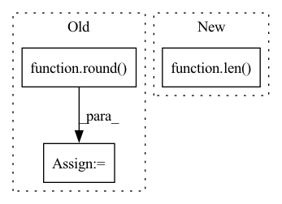

Pattern ID :38421
Before Change
for metric, value in zip(self.metrics, result_list):
for k in self.topk:
key = "{}@{}".format(metric, k)
metric_dict[key] = round( value[k - 1], 4)
return metric_dict
def _check_args(self):
After Change
user_len_list = interaction.user_len_list
if full is True:
scores_matrix = scores_tensor.view(len( user_len_list) , -1)
else:
scores_list = torch.split(scores_tensor, user_len_list, dim=0)
scores_matrix = pad_sequence(scores_list, batch_first=True, padding_value=-np.inf) // nusers x itemsIn pattern: SUPERPATTERN
Frequency: 3
Non-data size: 3
Instances Fragment ID: 109739289
Project Name: rucaibox/recbole
Commit Name: df66b6285fec567d1f3ca0d6ee9d9ceb71f792b6
Time: 2020-10-20
Author: 1337990880@qq.com
File Name: recbole/evaluator/topk_evaluator.py
M Class Name: TopKEvaluator
N Class Name: TopKEvaluator
M Method Name: collect(4)
N Method Name: collect(3)
M Parent Class: AbstractEvaluator
N Parent Class: AbstractEvaluator
M File Name: recbole/evaluator/topk_evaluator.py
N File Name: recbole/evaluator/topk_evaluator.py
M Start Line: 69
M End Line: 80
N Start Line: 38
N End Line: 57
Before Change
// p4 ─> p4p5 ─> pan_out1
// ↓ ↑
// p3 ─> pan_out2 ───┘
csp_depth = max(round( depth_mul * 2) , 1)
p3, p4, p5 = features // p3: [64, 64, 256], p4: [32, 32, 512], p5: [16, 16, 512]
p3 = conv_dw_pw_block(p3, p3.shape[-1] // 2, kernel_size=1, activation=activation, name=name + "p3_down_") // [64, 64, 128]
p4 = conv_dw_pw_block(p4, p4.shape[-1] // 2, kernel_size=1, activation=activation, name=name + "p4_down_") // [32, 32, 256]
// p4p5: [32, 32, 256]
p4p5 = upsample_merge([p4, p5], csp_depth, use_depthwise_conv=use_depthwise_conv, activation=activation, name=name + "p4p5_")
// pan_out2: [64, 64, 128]
pan_out2 = upsample_merge([p3, p4p5], csp_depth, use_depthwise_conv=use_depthwise_conv, activation=activation, name=name + "p3p4p5_")
// pan_out1: [32, 32, 256]After Change
p_name = "p{}_".format(len(features) + 2)
// upsamples: [p5], features[:-1][::-1]: [p4, p3] -> [p5, p4p5, p3p4p5]
for id, ii in enumerate(features[:-1][::-1]):
cur_p_name = "p{}".format(len( features) + 1 - id)
nn = conv_dw_pw_block(ii, ii.shape[-1] // 2, kernel_size=1, activation=activation, name=name + cur_p_name + "_down_")
p_name = cur_p_name + p_name
nn = upsample_merge([nn, upsamples[-1]], fpn_depth, use_depthwise_conv=use_depthwise_conv, activation=activation, name=name + p_name) Fragment ID: 109739294
Project Name: leondgarse/keras_cv_attention_models
Commit Name: bef44f2c07106cb7cf251facb6581ef6220cde48
Time: 2022-03-18
Author: leondgarse@gmail.com
File Name: keras_cv_attention_models/yolor/yolor.py
M Class Name: AnonimousClass
N Class Name: AnonimousClass
M Method Name: path_aggregation_fpn(5)
N Method Name: path_aggregation_fpn(5)
M Parent Class:
N Parent Class:
M File Name: keras_cv_attention_models/yolor/yolor.py
N File Name: keras_cv_attention_models/yolor/yolor.py
M Start Line: 139
M End Line: 152
N Start Line: 204
N End Line: 220
Before Change
nn = conv_dw_pw_block(nn, channel, 3, strides=2, use_depthwise_conv=use_depthwise_conv, activation=activation, name=stack_name + "downsample_")
nn = csp_stack(nn, depth, use_depthwise_conv=use_depthwise_conv, activation=activation, name=stack_name)
if use_spp:
ssp_depth = max(round( depth_mul * 2) , 1)
nn = res_spatial_pyramid_pooling(nn, ssp_depth, activation=activation, name=stack_name + "spp_")
features.append(nn)
After Change
stack_name = "stack{}_".format(id + 1)
nn = conv_dw_pw_block(nn, channel, 3, strides=2, use_depthwise_conv=use_depthwise_conv, activation=activation, name=stack_name + "downsample_")
nn = csp_stack(nn, depth, use_pre=use_pre, use_post=use_post, use_depthwise_conv=use_depthwise_conv, activation=activation, name=stack_name)
if id == len( depthes) - 1:
// ssp_depth = max(round(depth_mul * 2), 1)
nn = res_spatial_pyramid_pooling(nn, ssp_depth, activation=activation, name=stack_name + "spp_")
features.append(nn) Fragment ID: 109739283
Project Name: leondgarse/keras_cv_attention_models
Commit Name: bef44f2c07106cb7cf251facb6581ef6220cde48
Time: 2022-03-18
Author: leondgarse@gmail.com
File Name: keras_cv_attention_models/yolor/yolor.py
M Class Name: AnonimousClass
N Class Name: AnonimousClass
M Method Name: CSPDarknet(12)
N Method Name: CSPDarknet(7)
M Parent Class:
N Parent Class:
M File Name: keras_cv_attention_models/yolor/yolor.py
N File Name: keras_cv_attention_models/yolor/yolor.py
M Start Line: 84
M End Line: 102
N Start Line: 109
N End Line: 141